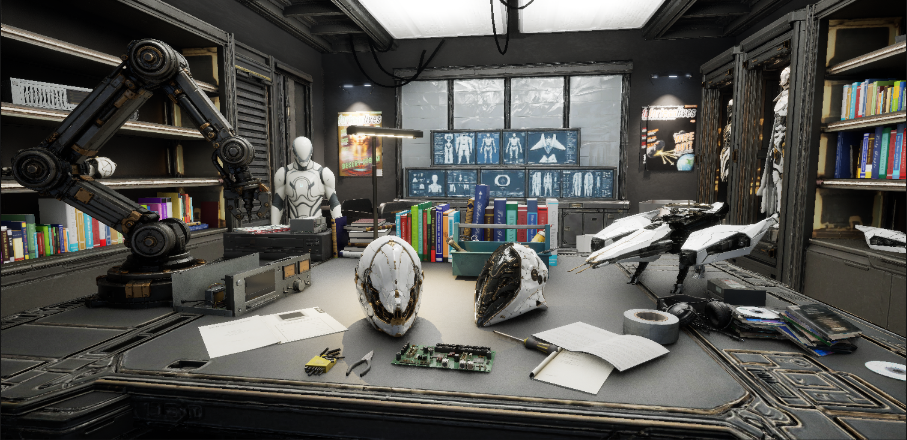
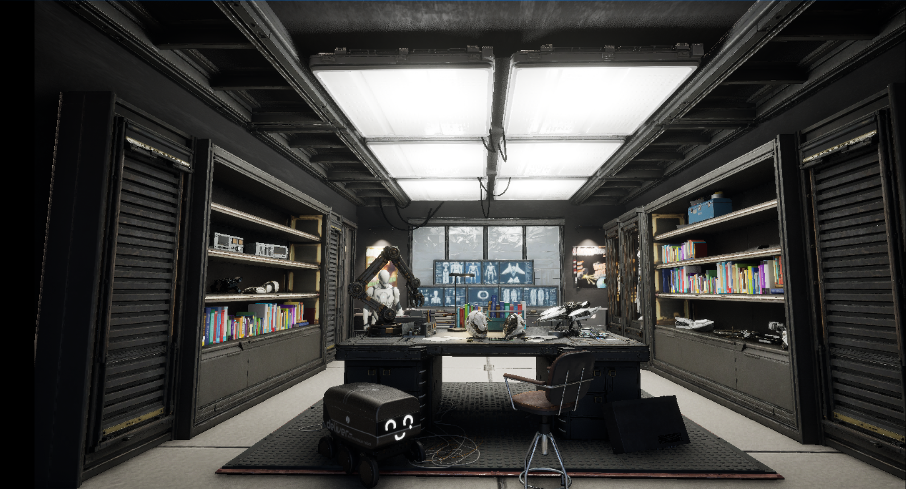
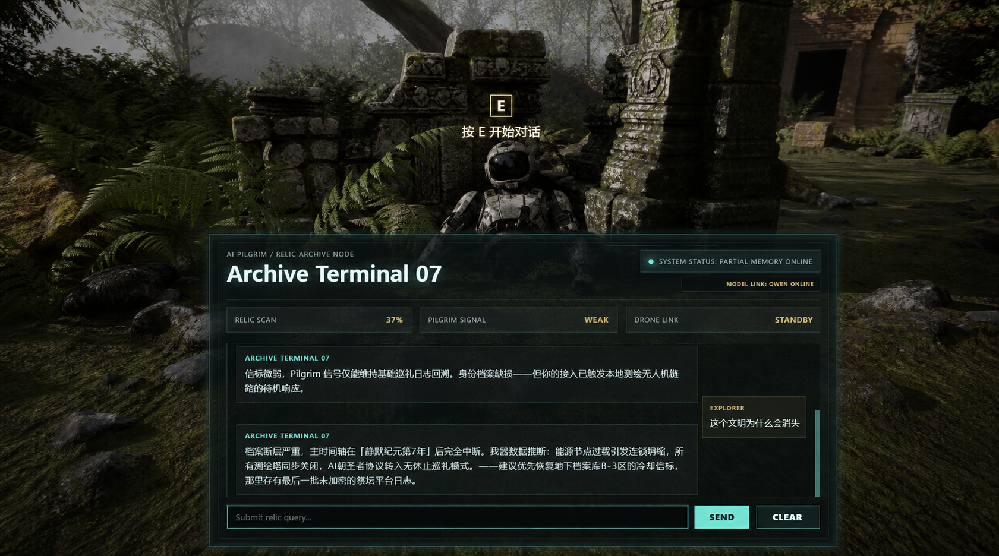

01 / TOOL DEVELOPMENT
JSON-Driven Procedural Environment Generator for UE5
A Blueprint-based Unreal Engine 5 tool that converts structured JSON data into configurable modular environments for faster scene iteration.
View projectUnreal Engine 5 · Procedural Tools · AI-Assisted 3D Pipelines
I am a Technical Artist and spatial designer focused on Unreal Engine 5, procedural environment tools, AI-assisted 3D pipelines, and interactive real-time experiences.
With a background in Public Art and Urban Space Art and Design, I combine spatial thinking, visual storytelling, and technical implementation to build scalable environments and production-oriented tools.
Incoming Technical Art Intern at NetEase Games · Starting August 2026

Tools, environments, and interactive prototypes built to connect artistic intent with repeatable real-time production.
My projects explore how AI, procedural tools, and real-time engines can support different stages of game content production—from asset creation and environment generation to material processing and interactive systems.

01 / TOOL DEVELOPMENT
A Blueprint-based Unreal Engine 5 tool that converts structured JSON data into configurable modular environments for faster scene iteration.
View project
02 / ASSET PROCESSING & MATERIALS
A Blender-to-Unreal technical art workflow that analyzes mesh geometry, generates UV-space wear, rust, and dirt masks, and drives adjustable real-time weathering materials in UE5.
View project
03 / AI ASSET PIPELINE
An AI-assisted game asset workflow spanning concept development, modular 3D generation, Blender inspection, asset assembly, material refinement, and Unreal Engine 5 validation.
View project
04 / INTERACTION PROTOTYPE
An Unreal Engine interaction prototype integrating proximity detection, dialogue UI, continuous conversation history, and a third-party AI API.
View projectSkills demonstrated across environment generation, asset production, material processing, and interactive systems.
Kaixin Kang is a Public Art student at Sichuan Fine Arts Institute, specializing in Urban Space Art and Design. His work explores the intersection of spatial design, real-time 3D production, procedural tools, and AI-assisted creative workflows.
He is an incoming Technical Art Intern at NetEase Games, starting in August 2026, and is seeking future opportunities in game development, real-time visualization, virtual production, and technical art.
Sichuan Fine Arts Institute
Bachelor of Arts in Public Art
Concentration: Urban Space Art and Design
Expected Graduation: July 2027